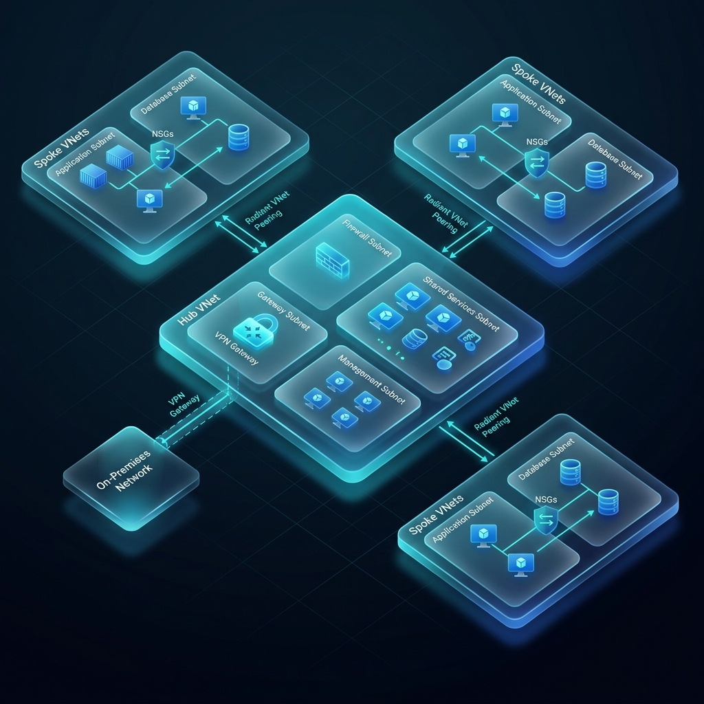

Virtual Network (VNet) の基本
- VNet: Azure 上の隔離された仮想プライベートネットワーク。
- サブネット: VNet を用途ごとに切り分けた範囲。特定の AZ には紐付かず、VNet 全域に展開。
- プライベート IP: VNet 内のリソース間通信に使用されるアドレス。

Azure のネットワークにおける最小単位が Virtual Network (VNet) です。AWS と異なり、サブネット自体は可用性ゾーン (AZ) に限定されず、VNet 全体（リージョン全体）をカバーするように設計されています。
graph TD
HUB[Hub VNet (Shared Services)] <--> S1[Spoke A (Web)]
HUB <--> S2[Spoke B (SQL)]
HUB --> GW[VPN Gateway / ExpressRoute]
S1 --> SN1[Subnet 1]
S1 --> SN2[Subnet 2]
style HUB fill:#0078d4,stroke:#fff,stroke-width:2px;
style S1 fill:#28a745,stroke:#fff;
style S2 fill:#28a745,stroke:#fff;
NSG (Network Security Group) とセキュリティ
- NSG: ポート、IP、プロトコルに基づいてトラフィックを許可/拒否。
- 適用単位: サブネット、または個別の NIC (仮想カード) に適用。
- 優先順位: 番号が小さいほど（例: 100）優先される。
Azure では、ネットワークセキュリティグループ (NSG) を使って通信を制御します。「ソース」「宛先」「ポート番号」と「優先順位」を指定して、強固なファイアウォールの役割を果たします。
また、ASG (Application Security Group) を併用すれば、IP アドレスを直接指定する代わりに「WebServers」といったグループ名で NSG ルールをシンプルに保つことができます。
VNet ピアリング
- 直接接続: 異なる VNet 同士を、Azure 内部ネットワークを使用して安全に接続。
- 低レイテンシー: 公衆インターネットを経由しない高速な通信。
- グローバルピアリング: 異なるリージョン間の VNet 接続も可能。
VNet ピアリングは、異なる仮想ネットワーク同士をシームレスに結合するための仕組みです。Hub-and-Spoke 構成など、複雑なネットワークトポロジを構築する際の中心的な役割を担います。ピアリングされた VNet 同士は、あたかも一つのネットワークであるかのように通信できます。
オンプレミス接続 (VPN と ExpressRoute)
| 比較項目 | VPN Gateway | ExpressRoute |
|---|---|---|
| 伝送路 | インターネット（暗号化） | 専用の物理回線 |
| 帯域幅 | 最大 10 Gbps (世代による) | 最大 100 Gbps |
| 安定性/コスト | 安価、変動あり | 高額、極めて安定 |
オンプレミス拠点（自社オフィスや他社クラウド）と Azure を接続する場合、まずは VPN Gateway による暗号化接続を検討します。さらに高い安定性と広帯域、そして公衆インターネットを完全に避けたい要件があれば、ExpressRoute という専用回線を導入します。